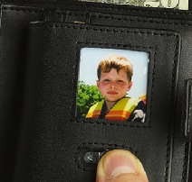
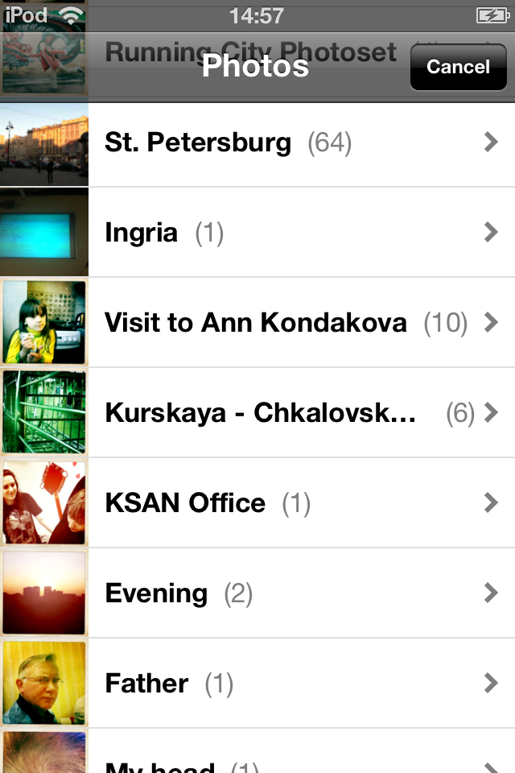
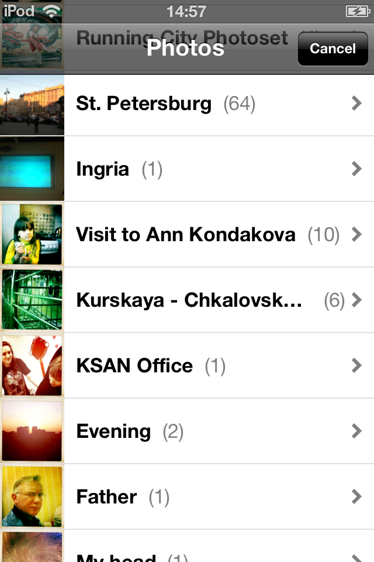

Техническое задание на Wallet Photo iPhone app¶
Основное задание
Дополнительные документы
Общее описание¶
Устанавливается приложение и выбирается одна - только одна - фотография, которая показывается в “бумажнике”, когда открываешь приложение. То есть, используется паттерн, когда мужчины хранят любимое фото в бумажнике. Функциональная польза - посмотреть любимую фотографию в 1 клик. Такое романтичное приложение.

Главный экран¶
На главном экране - статичное крупное изображение бумажника с кармашком для фотографии на весь экран. Кармашек - под квадратную фотографию. Верхней панели заголовка - нет, и вообще никаких служебных панелей нет.
Когда фотография не выбрана, вместо неё показывается надпись:
“Pick a Photo ...”, в русской версии: “Выберите фото ...”
Когда фото не выбрано, то при первом клике по экрану приложения происходит переход на Экран выбора фото.
Замена фотографии¶
Когда фото выбрано, то изменить фотографию можно нажав на специально предназначенную для этого кнопку. То есть, на экране должна быть такая кнопка. Оне не должна сильно выделяться, так как по задумке она не должна нажиматься часто.
Кнопка может ассоциироваться с настройками - если в будущем у нас появятся настройки приложения, их так же можно быдет вызвать по этой кнопке.
Экран выбора фото¶
Для выбора фотографии используется стандартный системный диалог. Можно выбрать фото из сохраненных либо сделать новую фотографию. Пример из приложения Tumblr:
 

Стилистика, референсы¶
Пример ракурса:

По стилистике - есть примерный вижн, что это должно выглядеть как “настоящий” кожанный бумажник - тактильный дизайн под коричневую кожу, но боллее “сочно” чем в реальности.
Иконки, стиль:
Технические характеристики¶
Приложение запускается на полный экран и занимает весь экран, строка статуса скрывается. Ориентация экрана - альбомная, то есть горизонтально, на боку.
Рабочее разрешение:
- 940x640, для iPhone 4 и новее
- 480x320, для iPhone 3GS и более старых
Размеры иконок:
- 57x57
- 114x114
Большая иконка для App Store:
- 512x512
Splash экран для загрузки - не требуется.
Дополнительный внутренний функционал (для программиста)¶
При установке должна запоминаться текущая версия приложения, так как возможно будет меняться логика покупки и появится In-App Purchase. Потребуется определять, установлено приложение с нуля, либо произошло обновление приложения.